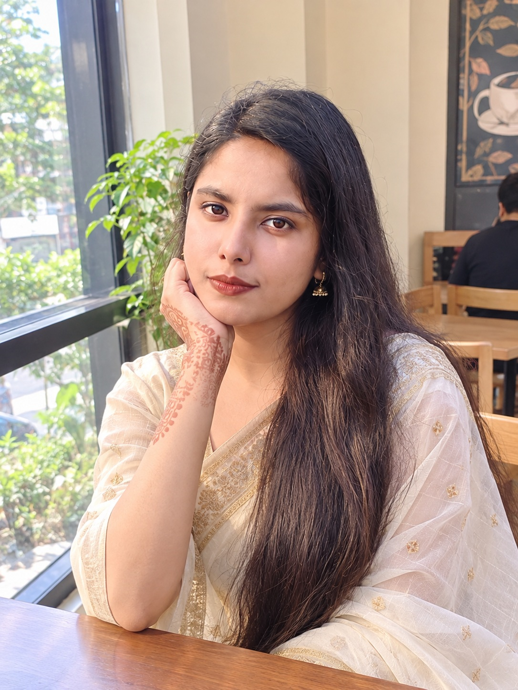
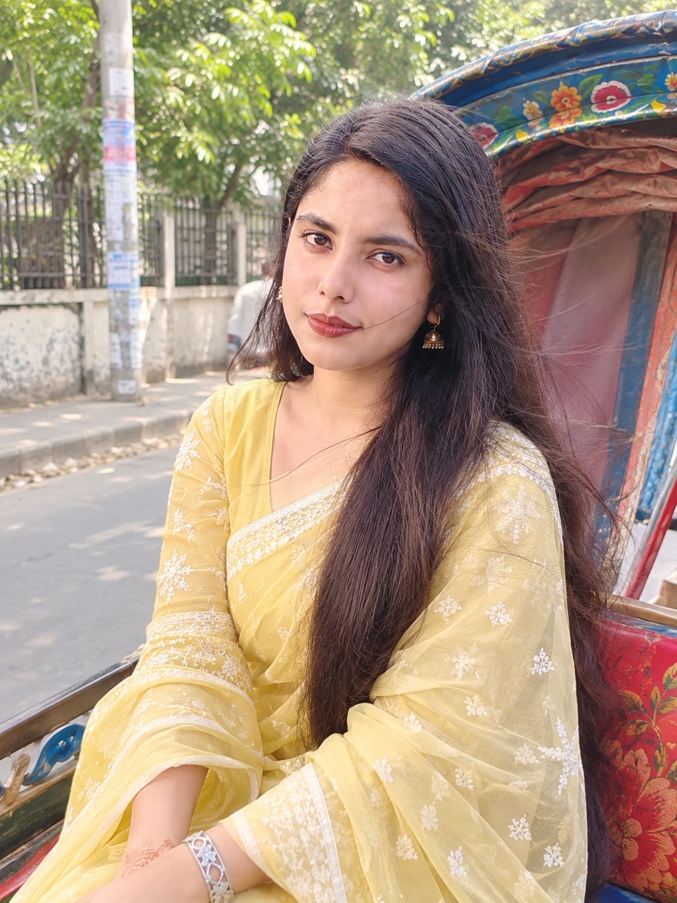
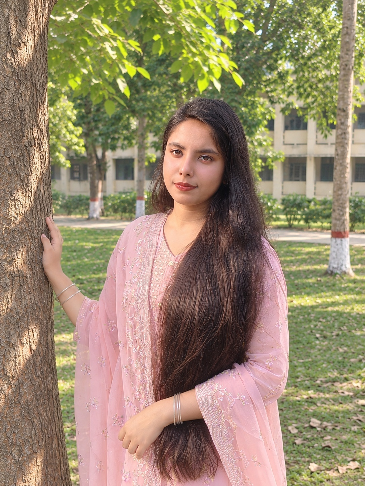

A little world of moments, memories, and everything that makes her, her.
tap anywhere to make flowers bloom
Some stories are best felt, not explained. This little corner brings together the moments, memories, and details that make her story uniquely hers.
Her Vibe
 Slow Morning
Slow MorningJust me, my tea, and a little sunshine. Some mornings are better when nothing is rushed.
 Rainy Mood
Rainy MoodRain on the outside, a little calm on the inside. Staying in and letting the moment be enough.
Lost in a few pages, away from the noise. A quiet little escape, right where I need it.

Café DateA sunny corner, a slow afternoon, and nowhere else I need to be. Keeping this little moment for myself.
A little walk, a lot of green, and a mind that finally gets to slow down. Needed this kind of day.
A quiet spot by the water, a soft breeze, and thoughts taking their own sweet time.
 Golden Hour
Golden HourThe light was golden, the water was calm, and for once, I wished the evening would stay a little longer.

City GirlA little colour, a little chaos, and my own pace through the city. Some days are made for getting out there.
 Old Charm
Old CharmOld walls, soft light, and a look I didn't plan. Sometimes the simplest frames turn out to be favourites.
 Afterglow
AfterglowOne last look at the sky before the day ends. Taking the pretty little moments with me.
Tap a photo to turn it over
Tania’s Timeline
- 2004২০০৪
- Tania came into this world in 2004, marking the beginning of a little story that would grow into so much more.২০০৪ সালে তানিয়ার পৃথিবীতে আসা, আর সেখান থেকেই শুরু হয় তার ছোট্ট গল্পের প্রথম অধ্যায়।
- 2009২০০৯
- Starting school opened the door to a new world filled with first experiences, familiar faces, and little memories.স্কুলে ভর্তি হওয়ার মধ্য দিয়ে শুরু হয় নতুন এক পথচলা, যেখানে অপেক্ষা করছিল অনেক নতুন অভিজ্ঞতা আর পরিচিত মুখ।
- 2015২০১৫
- Days spent with old friends slowly became some of those memories that still bring a smile.পুরোনো বন্ধুদের সঙ্গে কাটানো দিনগুলো ধীরে ধীরে হয়ে উঠল জীবনের এমন কিছু স্মৃতি, যেগুলো আজও মনে পড়ে।
- 2018২০১৮
- The wait for the results is still a moment to remember; some days simply stay with us, no matter how much time passes.ফলাফলের অপেক্ষায় কাটানো সেই সময়টা আজও মনে আছে, কিছু মুহূর্ত থাকে যেগুলো সময় পেরিয়েও ভুলে যাওয়া যায় না।
- 2019২০১৯
- A new friendship with Sadia and Riya began, bringing fresh stories to add to the memories already made.সাদিয়া ও রিয়ার সঙ্গে বন্ধুত্বের শুরু, পুরোনো স্মৃতির পাশে যোগ হলো আরও কিছু নতুন গল্প।
- Soon after, Sadia became Tania’s best friend, and she is still right here with her.এরপরেই সাদিয়া তানিয়ার বেস্ট ফ্রেন্ড হয়ে ওঠে, আর আজও সে তার পাশেই আছে।
- 2021২০২১
- Between the SSC exams and the final days of school, this chapter became one worth remembering.এসএসসি পরীক্ষার ব্যস্ততা আর স্কুলজীবনের শেষ দিনগুলো—সব মিলিয়ে সময়টা ছিল স্মরণীয়।
- 2022২০২২
- Supti & Lithi became part of the circle, bringing new stories and memories into familiar days.বন্ধুত্বের তালিকায় যুক্ত হলো সুপ্তি এবং লিথি, আর পরিচিত দিনগুলোর মাঝে শুরু হলো আরও কিছু নতুন গল্প।
- 2023২০২৩
- Even amid the HSC exam days, new memories were made with familiar faces and moments worth keeping.এইচএসসি পরীক্ষার ব্যস্ততার মাঝেও তৈরি হয়েছে নতুন স্মৃতি, কিছু পরিচিত মুখ আর কিছু বিশেষ মুহূর্ত নিয়ে।
- Todayআজ
- With old friends, new memories, and countless moments behind us, the story continues, with so much more still waiting ahead.পুরোনো মানুষ, নতুন স্মৃতি আর একসঙ্গে কাটানো অসংখ্য মুহূর্ত নিয়ে গল্পটা এখনো চলছে, আর সামনে অপেক্ষা করছে আরও অনেক কিছু।
Why She Is Special
A Heart That Cares
She cares more than she usually shows.
She may not always express it in words, but she genuinely cares about the people close to her. She notices the little things, remembers what matters, and shows her affection in her own simple ways. Sometimes, the smallest gestures reveal the biggest hearts.
Quietly Sensitive
Not everything she feels is something she says.
When something hurts her, she often becomes quiet instead of explaining what she feels. Sometimes, even when she says nothing is wrong, there may be a lot on her mind. Understanding her means paying attention not only to her words but also to her silence.
Stubborn, But Sweet
A little stubbornness, a genuinely good heart.
Tania has a stubborn side, and anyone who knows her well probably knows that! Once she makes up her mind, changing it isn't always easy. But behind that stubborn nature is a genuinely kind heart. Her little quirks are simply part of what makes her Tania.
A Friend Worth Keeping
She believes in staying, not just showing up.
For Tania, friendship is more than sharing laughs and going places together. It is about trust, understanding, caring, and being there when it matters. She carries memories of old friends and makes room for new ones. To her, a true friendship is one where people understand and stand by each other.
A Little World of Her Own
She finds happiness in the simplest moments.
A little outing with friends, her favourite food, a peaceful night, or some quiet time surrounded by nature — Tania finds happiness in simple things. She doesn't always need a big occasion to enjoy life. Sometimes, an ordinary day becomes a memory worth keeping forever.
Tap a card to read why
A Little Moment of Magicএকটু জাদুকরী মুহূর্ত
Sometimes, the smallest moments create the sweetest memories.কখনো কখনো ছোট ছোট মুহূর্তগুলোই সবচেয়ে মিষ্টি স্মৃতি হয়ে থাকে।
A Measure of Taniaতানিয়ার মাপজোখ
A little map of who she isসে কেমন মানুষ, এক নজরে
Counting Down to Her Special Dayতার বিশেষ দিনের অপেক্ষা
A little closer to another beautiful chapter of her life.তার জীবনের আরেকটি সুন্দর অধ্যায়ের আরও একটু কাছে।
Happy Birthday, Tania!শুভ জন্মদিন, তানিয়া!
May your life always be filled with happiness, beautiful memories, endless smiles, and countless reasons to shine. Keep being the wonderful person you are.তোমার জীবন সবসময় সুখ, সুন্দর স্মৃতি, অফুরন্ত হাসি আর উজ্জ্বল হওয়ার অসংখ্য কারণে ভরে থাকুক। তুমি যেমন অসাধারণ মানুষ, তেমনই থেকো।
Tap to reveal her special dayতার বিশেষ দিনটি দেখতে ট্যাপ করুন
Playখেলা
Pick a game and let's play togetherএকটা খেলা বেছে নাও, চলো একসাথে খেলি
Straighten Tania
Slide the pieces back into place to see the whole picture.

Click a piece next to the gap, or use the arrow keys
Some people make the world feel a little softer just by being in it. They find their way into our lives during the darkest days, bringing a little light when everything feels heavy, and gently helping us find our way out of the darkness. They turn ordinary moments into beautiful memories and leave behind a kindness that stays in the heart. Tania is one of those rare souls,
someone whose presence makes life feel brighter, gentler, and more beautiful.

Social Platforms
Tasnia Tania
Quiet kindness, loud laughter ✦
Quiet kindness, loud laughter ✦

196Swipe to see her profiles, then tap Visit